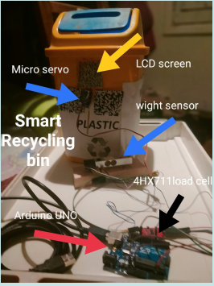
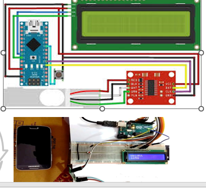
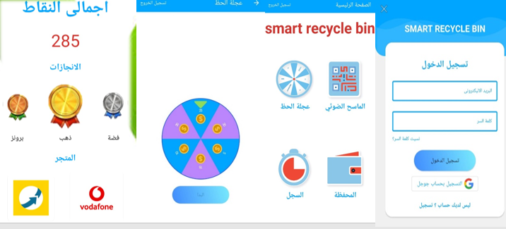
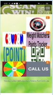

ملخص البحث
لم تعد أطنان المخلفات تمثل مشكلة للمجتمع بل لابد أن تصبح قيمة اقتصادية مضافة من خلال عملية إعادة تدوير شاملة لإعادة تصنيع هذه المخلفات وتصديرها الى العديد من دول العالم وباتت المخلفات التي ظلت لسنوات طويلة احدى مشكلات المجتمع المصري اليوم محط اهتمام كثير من المستثمرين ممن ادركوا الأهمية الاقتصادية والبيئية لإعادة التدوير وتمثل مشروعات اعادة التدوير للمخلفات في مصر جزءا من الجهود الرامية للحفاظ على البيئة وتعظيم الاستفادة من الموارد المتاحة وتسعى مصر لجذب المزيد من الاستثمارات لهذه المشروعات ، قد نتوقع بأن الصعوبات التي يمكن أن تواجهنا هي تغيير الثقافة المصرية ولكن هناك أيضا مافيا القمامة مافيا تسيطر على قطاع جمع المخلفات فى مصر من النباشين الذين ينتشلون أفضل ما فى القمامة من مخلفات ورقية وزجاج وأخشاب وعلب معدنية وبلاستيك ويترك المخلفات عديمة القيمة، حيث تصل قيمة ما يحصلون عليه نحو ٧ مليارات جنيه سنويا من هذه المخلفات، مما يصعب من استغلال الشركات الرسمية للمخلفات المصرية فى عملية تدوير القمامة والصناعات المرتبطة به. فنحن في حاجة ماسة لان نشجع المصريين وربة المنزل العادية على ممارسة فصل المخلفات من المنبع لتصبح عادة حياتية مجتمعية وليست رفاهية من هنا جاء التفكير في عمل سلال مهملات ذكية بالباركود ) لديها القدرة على وزن نفاياتك ( ترتبط بتطبيق لجمع النقاط يعتمد على كمية النفايات التي تضعها في السلة الصحيحة ) كانزات،أوراق، مخلفات عضوية،مخلفات صلبة،.....وغيرها ( وتوضع في حسابك برقمك القومي وتحول النقاط الى أموال في رصيك )الحصالة( او نقاط يمكن استبدالها بسلع عينية من الهايبرات الكبيرة التي تتعاقد معها شركة النظافة ، أو دفع مصاريف المدرسة والكتب والرحلات المدرسية للطلبة بربط التطبيق بشبكة وزارة التربية والتعليم لتكون سلة المهملات بالباركود هو المشروع الربحى للطالب والاسرة والمدرسة وتشجع السلال الذكية بالبار كود على زيادة كمية نفايات التدوير لتزيد من نقاطك وتتحول الى رصيد وبالتالي تزيد كميات النفايات الجاهزة لعملية إعادة التدوير والتي تسقط اسفل السلة في صندوق كبير تحت الأرض بمكبس هيدروليكي لكبس النفايات ويحفظها بعيدا عن أيدى النباشين
التطبيقات
المشروع يتم تطبيقه بسهوله من شركات النظافة الرسمية او الخاصة المرخصة وهو مشروع له عائد استثماري مرتفع ويمكن البدء في التطبيق في مناطق ذات الدخل المرتفع والمتوسط ثم تعميم التجربة شيئا فشيئا هنا ياتى دور التطبيق المرفق مع سلة اعادة التدوير الزكية تطبيق بواجهة بسيطة سهل الاستخدام من ربات البيوت والطلاب الصغار في المدارس والجميع ينشىء المستخدم اكونت او حساب علي التطبيق بالرقم القومي وذلك لربطه وسهوله الاستدلال عليه في التعامل مع جهات حكومية مثل وزارة التربية والتعليم هناك جزء من التطبيق خاص بقراءة ال QR code وتحويله الى مكافىء من النقاط وذلك بجدول يوضح كل وزن من النفايات = عدد نقاط ،النقاط لها جزء اخر يحول كل مجموعةمن النقاط= كوبونات خصم كل مجموعة من النقاط تتحول الى الحصاله لتجميعها لتتحول لمبلغ مالى كاش ممكن تحويلة الي رصيد في الإدارة التعليمية لدفع مصاريف المدرسة او لشركة الاتصالات لدفع فواتير النت و بطاقات الاتصالات وغيرها من اشكال السداد المتصله بالجهات الحكومية المختلفة ،وهناك البادجات للمستخدم المثالي الاكثر استخداما للتطبيق والذى يحصل علي نقاط كثيرة فى مده زمنية قصيرة والبادج الوان متعددة لنصل للبادج البرونزى = 10 نقاط ،البادج الفضى = 20 نقاط ،البادج الذهبى = 30 نقاط،وهناك عجلة الحظ يمكن استخدامها مره واحده يوميا لاضافة نقاط .
   